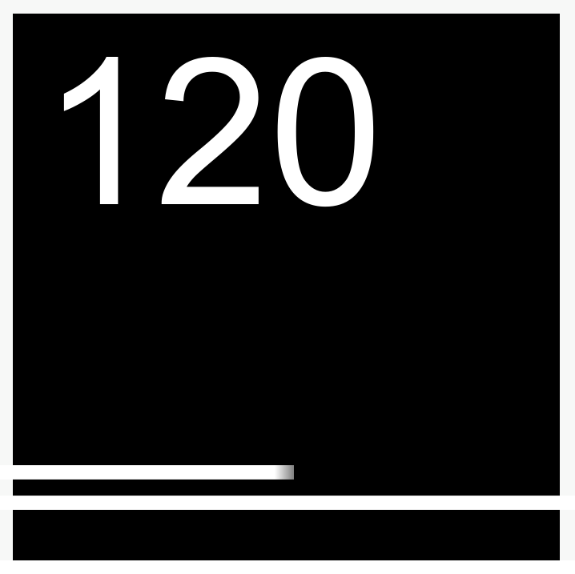

Hi! It's me, Artem. I'm a guy from Russia, programmer, gamer. I'm making games, pages and etc.
Playing Scrap 2 at mostly. Stats in Scrap 2: x105 Stars, 4B+ GS. (At 2 March 2025 moment)
Wiki of The Game: Scrap 2 Wiki
Developing games.

Current project: Endless
Version: v0.2.1.0